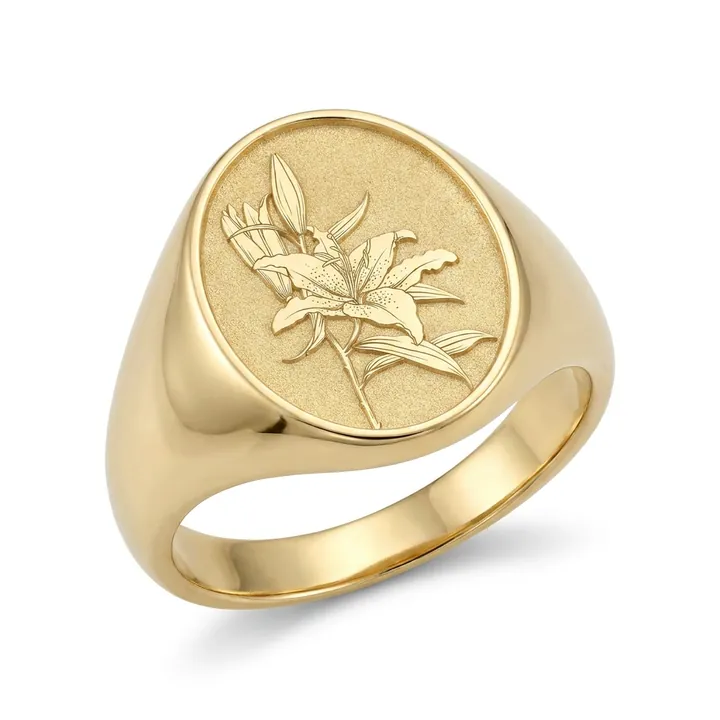
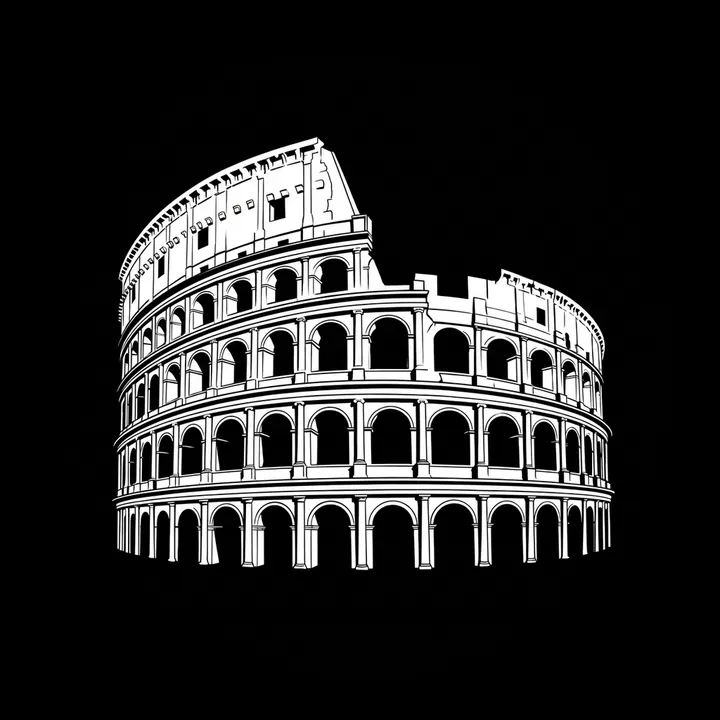
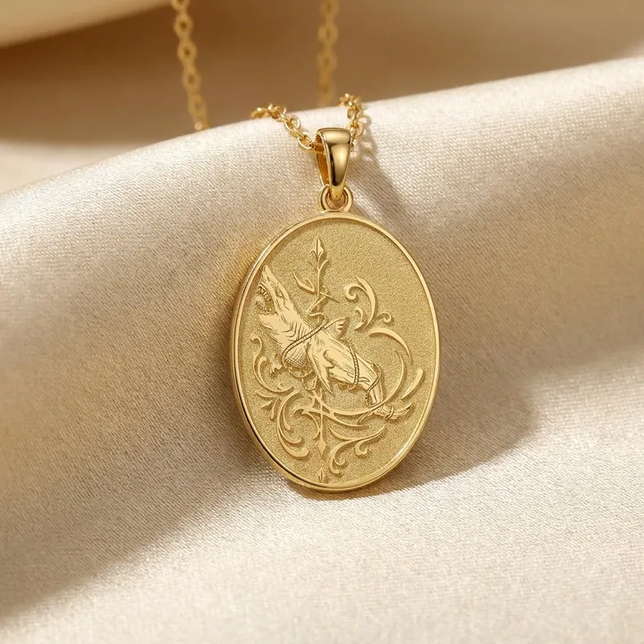
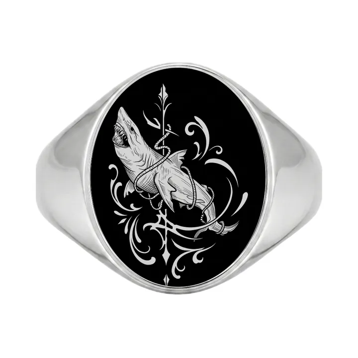
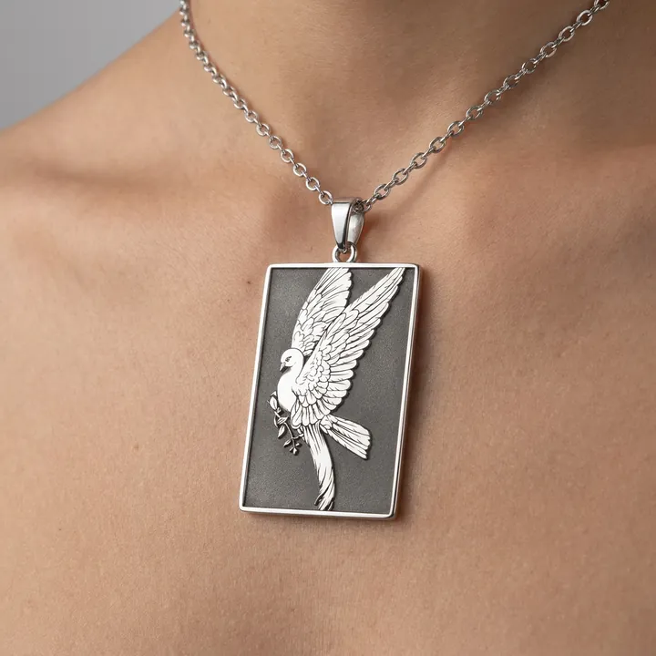
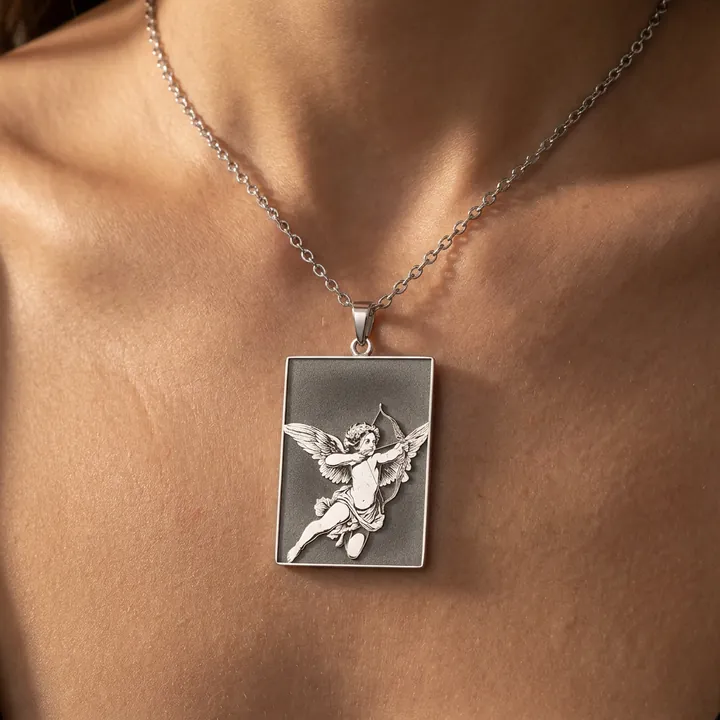
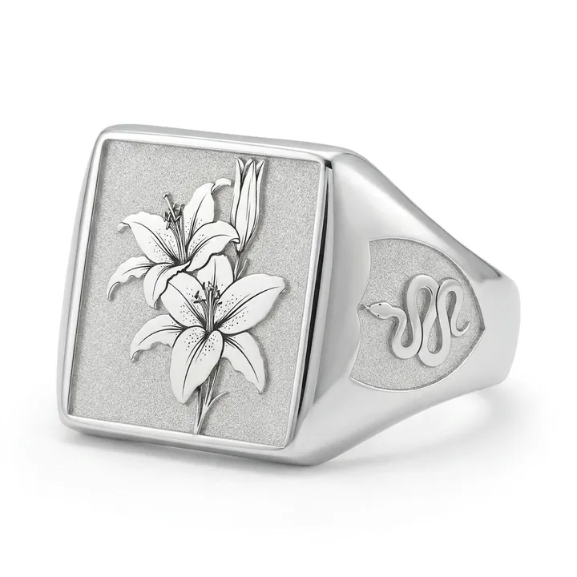
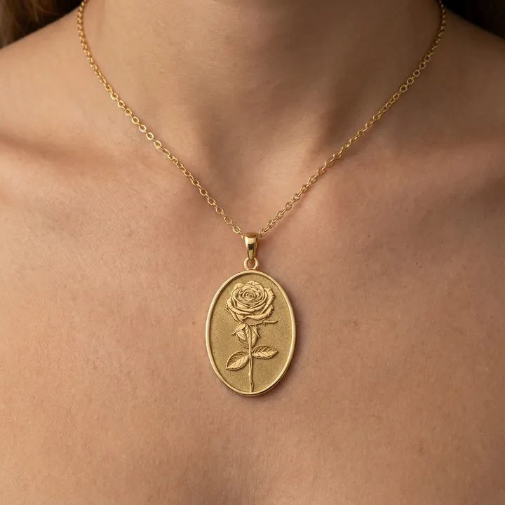
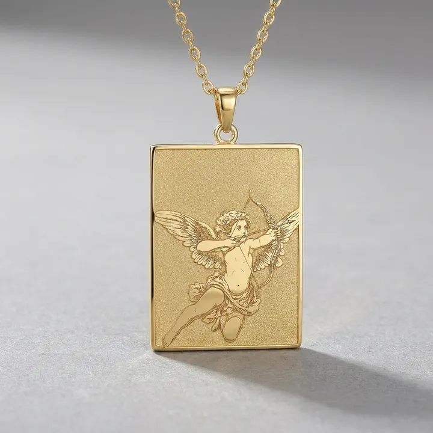

Fikirden mücevhere
Bir görsel yükle. Mücevhere dönüşsün.
















01
Taslak
Görselini yükle; yapay zekâ kazımaya hazır bir çizime çevirir.
02
Ürün
Çizim gerçek yüzük ve kolye kalıplarına oturur. Ücretsiz.
03
Mockup
Satışa hazır stüdyo ve sahne fotoğrafı.
04
Manken
Ürünü elde ya da boyunda gör.
Tanıtım